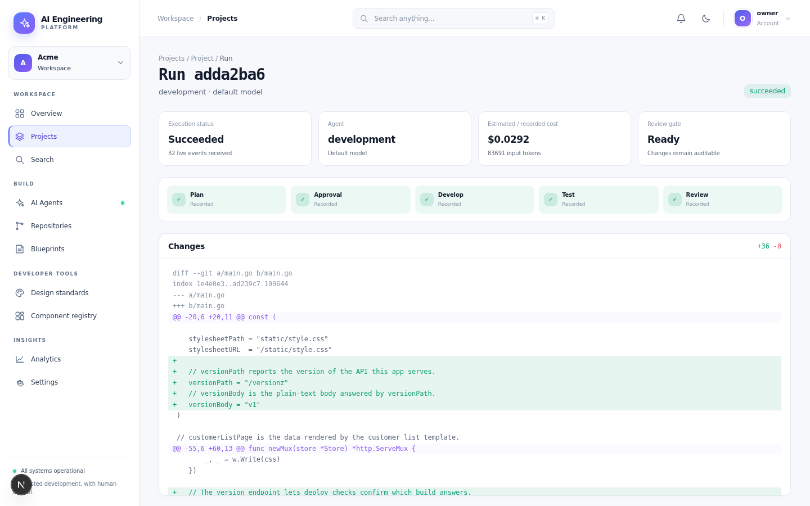

Agent runs and approvals
A run is one agent execution. It has a type, a frozen context, a budget and an event stream. The run view is where a team sees what the agent did and decides what happens next.

A development run: plan, approval, build, test and review in one timeline, with the diff that will be merged.
Run types
| Type | Purpose | Gate |
|---|---|---|
| Planning | Inspect context and propose steps, files and risks | Plan approval |
| Development | Implement the approved plan and produce a diff | Test/design gates, PR approval |
| Review | Inspect a diff and report findings | PR approval |
Start a run
- Open a Ready task.
- Choose Run agent and select the type.
- Confirm the model/agent and budget if the project allows a choice.
- Watch the run view; events stream live.
A run cannot start if the task is not ready, if the repository is unreachable, or if the project has no allowed agent.
What the run view shows
- Context — the frozen manifest: files, rules and token budget
- Plan — steps, files, risks and estimated cost
- Approval — the decision and who made it
- Changes — the diff, with additions and deletions
- Checks — tests, design checks and acceptance evidence
- Cost — recorded tokens and provider cost
- Events — an append-only timeline with timestamps
Approvals
Plan approval
A human can approve, request changes or reject.
- Approve sends the run to implementation.
- Request changes returns it to planning with a note.
- Reject stops the run and leaves the task for a human.
The approval records the user, the time and the plan version.
PR approval
A pull request requires the configured number of distinct approvers and all required checks. An agent cannot approve its own PR or bypass branch protection.
Retry, cancel and failures
- Retry starts a new run from a checkpoint or from the beginning, depending on the failure.
- Cancel is cooperative: the worker asks the runtime to stop and kills the sandbox.
- A failed run keeps its events and artifacts for inspection. The task returns to a state a human can act on.
Common failure reasons are shown in the run view: clone failure, provider error, budget exceeded, missing proof or a failed check.
Budgets
A run has a token and cost budget. The worker checks it between phases. When the budget is exhausted the run fails with a clear reason instead of continuing silently.
Next
Retry development, Fix review findings and Fix CI
The run page offers a different action depending on where the run stopped:
| The action | When to use it | What it does |
|---|---|---|
| Retry development | the development run failed (a build, a test, a timeout) | re-queues the same task from the plan; a human still approves the new run |
| Retry task | any failed run | re-queues the task from the start |
| Fix review findings | the review run found blockers | starts a fix run that addresses the findings and re-runs the gates |
| Fix CI | the pull request's checks failed | starts a fix run that targets the failing check |
Every one of them is a new run with its own trace; the platform never merges.